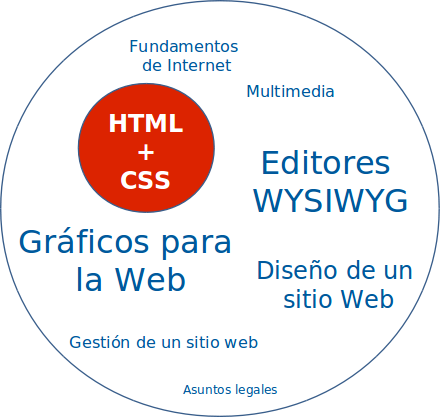
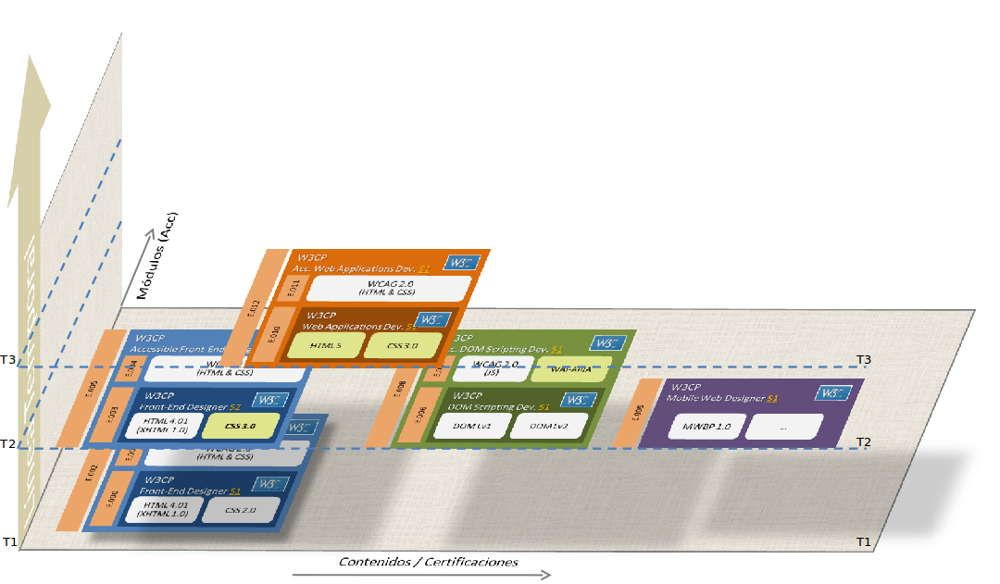

¿Qué aporta el W3C a la Web?
¿Por qué funcionan los estándares Web? (I)
Ahorro de costes
- Cooperación con los mejores expertos de la Web - ahorro de consultorías
- Compartir inversión I+D: más allá de los recursos de una sola organización
- Intercambio de ideas y experiencias
- Las mejores especificaciones gracias a una amplia revisión
- Libres de derechos
- Compartir el coste de las pruebas de desarrollo
¿Por qué funcionan los estándares Web? (II)
Aumento de beneficios
- Los estándares abiertos aumentan la innovación y la
competencia
- Incremento del crecimiento gracias a la confianza del mercado
- Los clientes tienen más confianza - no están sujetos a tecnologías propietarias
¿Por qué funcionan los estándares Web? (III)
¡Interoperabilidad!
El proceso de construcción de los estándares
Web 0.1

Web 1.0

Web 1.0

Una Web para navegar
- HTTP + URL + HTML
- Ancho de banda limitado
- Dispositivos limitados (de escritorio)
- No era posible la interacción con el documento
...Experiencia de usuario “pasiva”
Web 2.0

Una Web para interactuar
- HTTP + URL + HTML + Javascript + Flash
- Mayor ancho de banda
- Más potencia de computación
- Más dispositivos (escritorio+móviles)
...Experiencia de usuario “interactiva”
Web 3.0... 4.0... x.0...
Mejorando la Plataforma Web Abierta
 Albert Robida, 1882
Albert Robida, 1882
- La Web de los Datos
- La Web de la Interacción
La Web de la Interacción
Modelando la interfaz de usuario para mejorar la interacción
- Mejorando el lenguaje de primera generación, HTML
- Integrando las tecnologías de segunda generación:
- CSS (estilos atractivos)
- SVG (gráficos interactivos)
- MathML (representaciones matemáticas)
- Vídeo, Canvas, Geolocalización, ...
Muchas más piezas...
- HTML 5
- CSS 2.1
- CSS 3 Selectors
- CSS 3 Media Queries
- CSS 3 Text
- CSS 3 Backgrounds and Borders
- CSS 3 Colors
- CSS 3 2D Transformations
- CSS 3 3D Transformations
- CSS 3 Transitions
- CSS 3 Animations
- CSS 3 Multi-Columns
- CSS Namespaces
- SVG 1.1
- WAI-ARIA 1.0
- MathML 2.0
- ECMAScript 5
- 2D Context
- WebGL
- Web Storage
- Indexed Database
- Web Workers
- Web Sockets Protocol/API
- Geolocation
- Server-Sent Events
- Element Traversal
- DOM Level 3 Events
- Media Fragments
- XMLHttpRequest
- Selectors API
- CSSOM View Module
- Cross-Origin Resource Sharing
- File API
- RDFa
- Microdata
- WOFF
- HTTP 1.1 part 1 to part 7
- TLS 1.2 (updated)
- IRI (updated)
- …
W3C España

W3C España a vuestro servicio
- Enlace W3C con España
- Relación con Miembros W3C
- Coordinación de Traducciones Autorizadas
- Difusión
- Formación
- …
- ¡Certificación! (en unas semanas)
Certificación W3C España
Certificación de personal
- Sobre Tecnologías W3C
- Aval de conocimientos dentro del ámbito de un perfil profesional
- Ejemplo: Diseñador Web

Certificación W3C España



{kind=link}